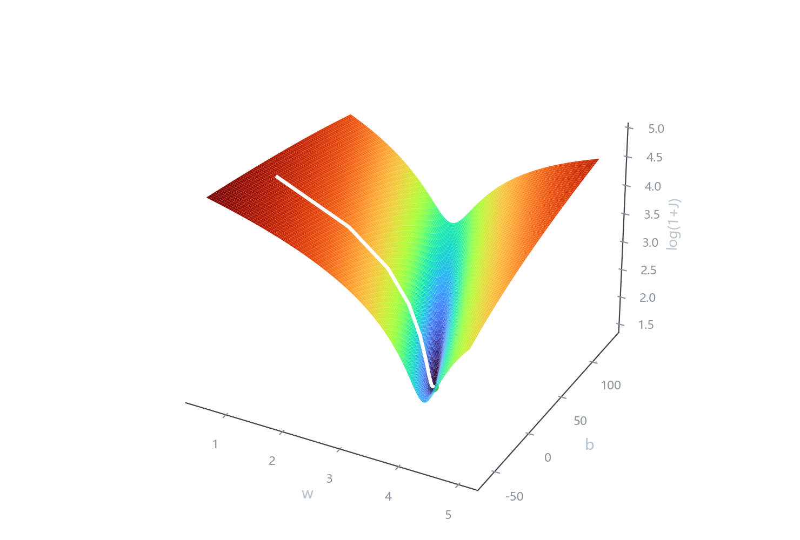
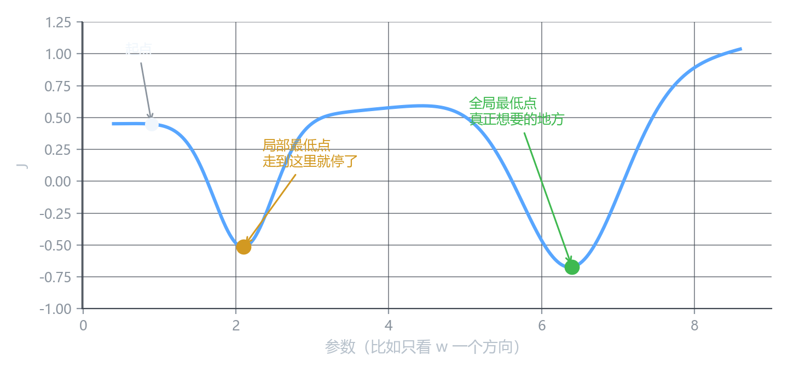

梯度下降
这一课要回答什么
上一课造出了损失函数 J(w,b)：给它一组参数，它告诉你这条线有多差。
现在的问题是：
站在曲面上的某一点，怎么知道该往哪走，才能让 J 变小？
答案是梯度下降（gradient descent）。这是整个深度学习里最核心的一个算法——后面所有的训练，不管模型多大，底层都是它。
先给个画面
想象你被空投到一片山谷里，蒙着眼，任务是走到谷底。
你能做的只有一件事：用脚感受脚下的坡度。
- 感觉一下哪个方向最陡、最向下
- 朝那个方向迈一小步
- 站定，重新感受一次
- 再迈一步
一直重复，直到脚下已经平坦（四周都不再下降），你就到了谷底。
这就是梯度下降。 不规划全局，只处理眼前这一步。
对应到我们的问题：
| 山谷 | 机器学习 |
|---|---|
| 你站的位置 | 一组具体的 (w, b) |
| 地面高度 | 损失 J(w,b) |
| 脚下的坡度 | 梯度 \nabla J |
| 迈一步 | 更新一次参数 |
| 走到谷底 | 找到让损失最小的一组参数 |
看一眼真实的曲面

横轴 w、纵轴 b，这是”地面坐标”；高度是损失。
那条白线就是”走”出来的轨迹：从左上角出发，一路滑进中间那条深沟，最后停在绿点附近。
原始损失的跨度太大了：从 37 到 37000，差一千倍。直接画，谷底会被压成一条看不见的缝。
取对数只是把高度压缩了，形状没变。就像把一座山按比例压扁——哪里高哪里低，一点没变。
麻烦：谷不止一个
上面那张图里的地形很简单，只有一个底。但真实的损失曲面往往不止一个坑。
下图是一条剖面的示意（把多个参数压成一条横轴）：

从最左边出发，顺着坡往下走，你会掉进中间那个小坑，然后停住——因为四周都不再下降了。
但右边还有一条更深的沟。你到不了那里，因为你根本不知道它存在。
停在”局部最低点”而不是”全局最低点”，是所有基于梯度的优化方法的通病。
它只能保证”我脚下是平的”，没法保证”这是全世界最低的地方”。
不过：我们这条 J(w,b) 是个例外——它是一个碗，只有一个最低点，数学上叫凸函数。所以线性回归的梯度下降只要迭代足够多次，一定能找到全局最优。（“足够多次”是关键——第 2 章最后一课会看到一个反例。）
深度学习里没有这种保证了。到第 16 章会回来看这件事。
数学准备：导数和偏导
要”感受坡度”，需要用导数。
一句话：导数描述”往某个方向挪一点点，函数值会变多少”。
\frac{dJ}{dw}
读作”J 对 w 的导数”。它是个数：
- 正数 → w 增大，J 会变大（所以该让 w 减小）
- 负数 → w 增大，J 会变小（所以该让 w 增大）
- 接近 0 → 这里是平地，差不多到谷底了
现在的问题是，J 有两个自变量（w 和 b）。这时要用偏导数：
\frac{\partial J}{\partial w}, \qquad \frac{\partial J}{\partial b}
符号从 d 变成 \partial（读作”偏”），意思是：只对这一个变量求导，把另一个当成常数。
物理上理解：你想知道”只往 w 方向挪”，那就把 b 按住不动，单独看高度怎么变。
把两个偏导算出来
J 的定义是：
J(w,b) = \frac{1}{2m}\sum_{i=1}^{m}\left(wx^{(i)} + b - y^{(i)}\right)^2
对 w 求偏导（b 当常数，用链式法则，平方的导数乘上内部对 w 的导数 x^{(i)}）：
\frac{\partial J}{\partial w} = \frac{1}{2m}\sum 2\left(wx^{(i)}+b-y^{(i)}\right)\cdot x^{(i)} = \frac{1}{m}\sum\left(\hat{y}^{(i)}-y^{(i)}\right)x^{(i)}
对 b 求偏导（内部对 b 的导数是 1）：
\frac{\partial J}{\partial b} = \frac{1}{2m}\sum 2\left(wx^{(i)}+b-y^{(i)}\right)\cdot 1 = \frac{1}{m}\sum\left(\hat{y}^{(i)}-y^{(i)}\right)
看到那个 \frac{1}{2} 的作用了吗——它和平方求导下来的 2 正好抵消。当初加它的理由就是这个。
\dfrac{\partial J}{\partial b} 就是所有残差的平均值。残差是”预测减真值”，所以这个数为负，说明整体预测偏低，该把 b 调大。
\dfrac{\partial J}{\partial w} 是残差乘面积后的平均值。面积越大的房子，它的残差对 w 的影响越大——因为面积大的点上，w 的一点变化会放大成更大的预测偏差。
梯度
把两个偏导装进一个向量，就是梯度：
\nabla J = \left( \frac{\partial J}{\partial w},\ \frac{\partial J}{\partial b} \right)
- 方向：梯度指向函数上升最快的方向
- 大小：梯度越陡，说明坡越陡
所以”下坡最快”的方向就是梯度的反方向——这就是更新式里那个减号的来历。
更新公式
w \leftarrow w - \alpha \frac{\partial J}{\partial w}, \qquad b \leftarrow b - \alpha \frac{\partial J}{\partial b}
逐个符号拆开：
| 符号 | 含义 | 备注 |
|---|---|---|
| w, b | 当前的参数 | 要改的东西 |
| \leftarrow | 赋值 | 不是”等于”，是”用右边算出的新值覆盖左边” |
| \alpha | 学习率 | 你手动设定的数，不是学出来的 |
| \dfrac{\partial J}{\partial w} | 偏导 | 坡度，告诉方向 |
| -\alpha\cdot(\text{偏导}) | 这一步走多远、朝哪走 | 方向反着来，长度由 \alpha 控制 |
合起来读：新参数 = 老参数 − 学习率 × 当前的坡。
学习率 \alpha
它决定每一步迈多大。这是你调模型时最先要动的旋钮。
| \alpha | 现象 | 叫法 |
|---|---|---|
| 太小 | 每一步几乎不动，要跑几万步才到 | 收敛慢 |
| 合适 | 几十步内落到谷底附近 | — |
| 太大 | 一步跨过谷底，到对面更高的地方，再来一步更高 | 发散 |
| 极大 | 第一次更新就直接算出无穷大或 NaN | 爆炸 |
用一个比喻：下山时步长。
- 步子太小：天黑也下不去
- 步子适中：几十步到底
- 步子太大：一步跨过谷底，直接冲到对面山坡上，越走越往山顶去
NaN（not a number）是最常见的崩溃信号。看到 loss 变成 nan，第一个要怀疑的就是学习率太大。
一个必须写对的细节：同时更新
这是线性回归那门课里最容易被忽略、又最容易写错的地方。
w 和 b 的更新必须同时完成。也就是：
- 先用当前的 w、b 算出两个偏导
- 算出两个新值，暂时存着
- 最后一起赋值
# 错的：w 已经变了，再算 b 的更新时用的是新的 w
w = w - alpha * dJ_dw(w, b)
b = b - alpha * dJ_db(w, b) # ← 这里的 w 已经不是原来的 w 了正确写法
# 对的：两个偏导都基于旧的 w、b
dw = dJ_dw(w, b)
db = dJ_db(w, b)
w = w - alpha * dw
b = b - alpha * db为什么必须这样？因为梯度是在当前这个点上测出来的。一旦 w 变了，你脚下的位置就变了，原来测的坡度对新位置不再成立。混着用，等于在拿 A 点的坡去指导 B 点的移动。
单变量时两者结果一样（只有一个参数，没得混），所以很多人写错了也发现不了。两变量时就会出错。
真实走一遍
用我们的数据（12 套房），从 w = 1.0、b = 0 出发，学习率取 \alpha = 4.5 \times 10^{-5}。
第一步手算：
- 12 个残差 \hat{y} - y 的平均值是 -262.38 → \dfrac{\partial J}{\partial b} = -262.38
- 残差乘面积再平均是 -27562 → \dfrac{\partial J}{\partial w} = -27562
w_{\text{new}} = 1.0 - 4.5\times10^{-5}\times(-27562) = 2.2403 b_{\text{new}} = 0 - 4.5\times10^{-5}\times(-262.38) = 0.0118
跑五步：
| 步 | w | b | J |
|---|---|---|---|
| 0 | 1.0000 | 0.0000 | 37007.88 |
| 1 | 2.2403 | 0.0118 | 10724.14 |
| 2 | 2.9070 | 0.0182 | 3128.88 |
| 3 | 3.2655 | 0.0216 | 934.07 |
| 4 | 3.4581 | 0.0235 | 299.83 |
| 5 | 3.5617 | 0.0245 | 116.55 |
五步，损失从三万七降到一百一十六。
五步下来 w 走了 2.5，b 只走了 0.02。
不是算错了——是 w 的梯度（-27562）比 b 的梯度（-262）大了整整一百倍。同一个学习率，梯度大的参数走得飞快，梯度小的几乎原地不动。
原因是面积的数值（几十到一百多）远大于截距——量纲差了一百倍。这就是第 3 章”特征缩放”要解决的问题。现在先记住这个现象。
核心概念
| 概念 | 内容 |
|---|---|
| 梯度下降 | 反复沿负梯度方向迈小步，直到损失不再下降 |
| 导数 \frac{dJ}{dw} | 往这个方向挪一点，函数变多少；正负号给方向 |
| 偏导 \frac{\partial J}{\partial w} | 多变量时只对一个求导，其余当常数 |
| 梯度 \nabla J | 所有偏导组成的向量，指向上升最快的方向 |
| 更新式 | \theta \leftarrow \theta - \alpha\,\nabla J |
| 学习率 \alpha | 步长；太小走得慢，太大直接发散 |
| 同时更新 | 两个偏导都用旧参数算，算完再一起赋值 |
| 局部最优 | 只能保证脚下是平的，不保证是全局最低 |
下一课
这一课是”知道大概在干什么”。下一课往深里走：
- 为什么梯度方向恰好是最陡的方向（不是”差不多陡”，是数学上的精确）
- 学习率的选取和收敛判断：怎么知道该停了
- 学习率太大的发散到底长什么样（画出来）
- 梯度消失、梯度爆炸是怎么回事